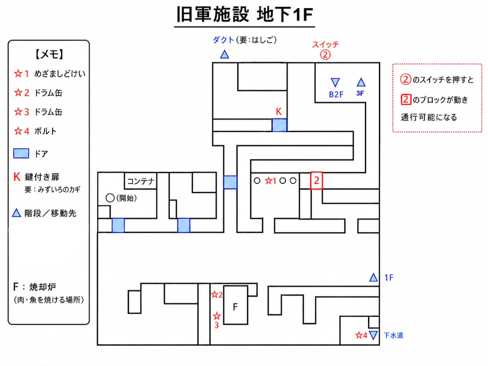
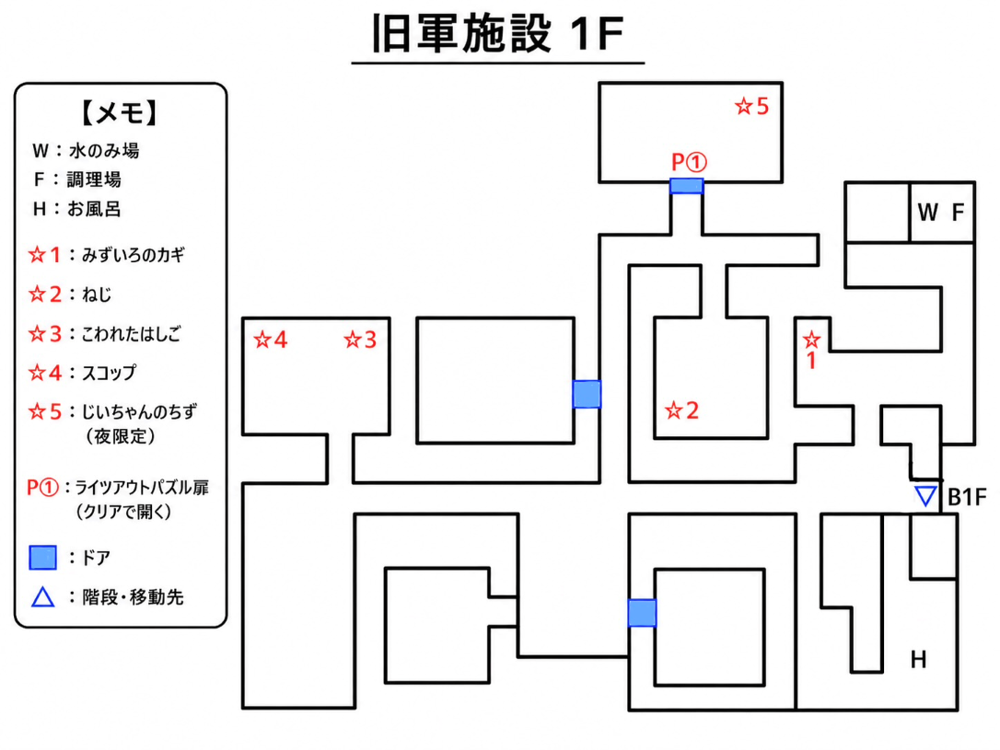
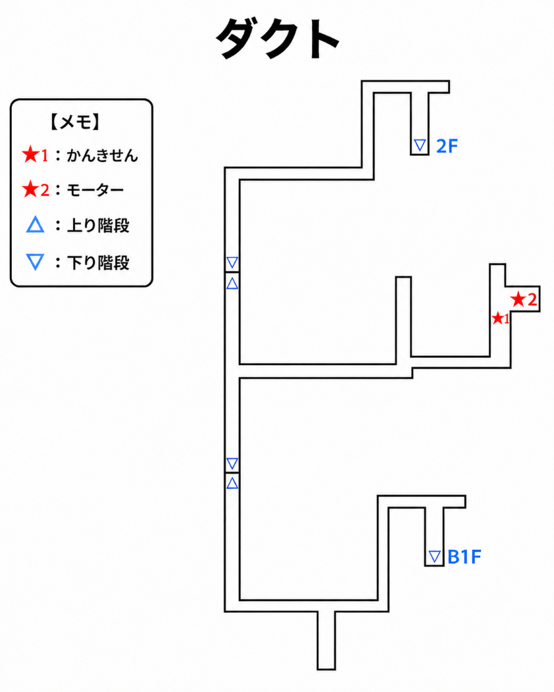
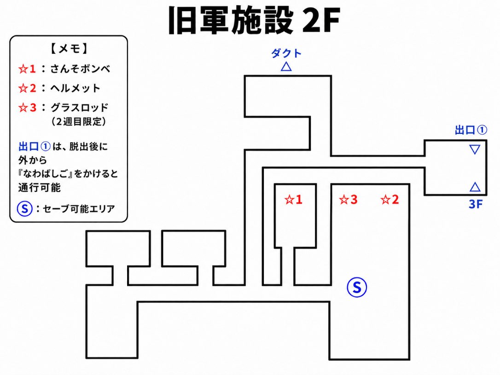
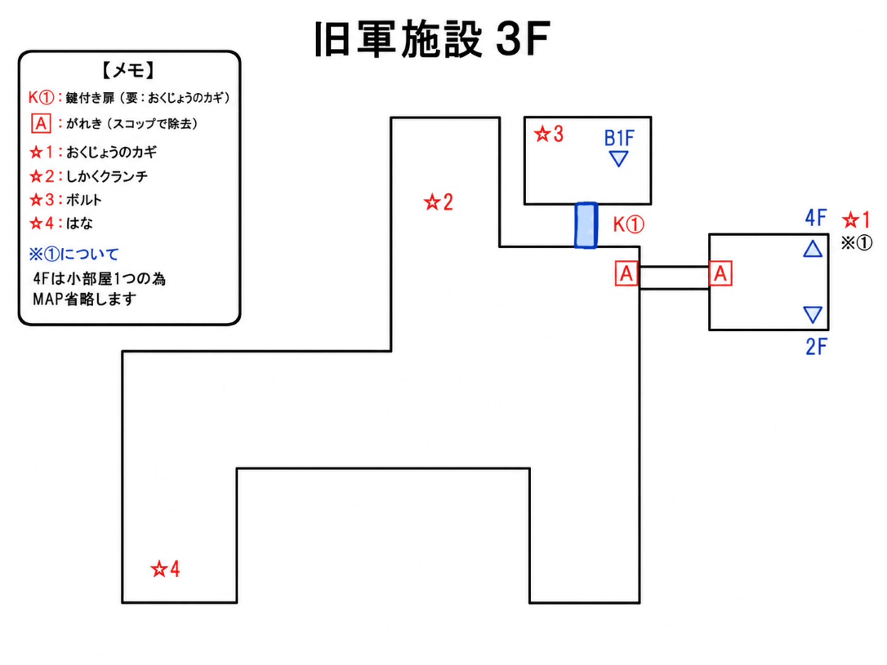
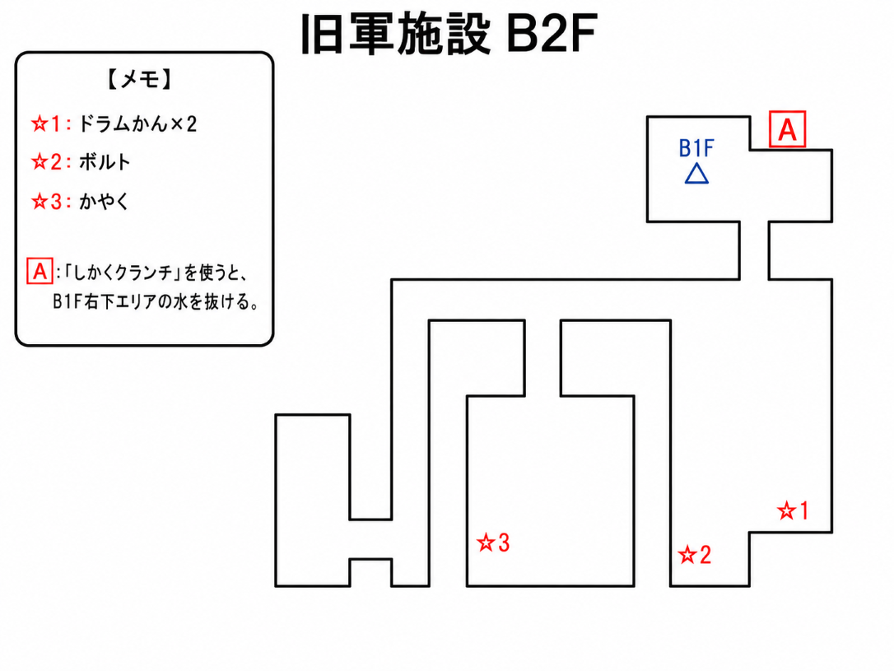
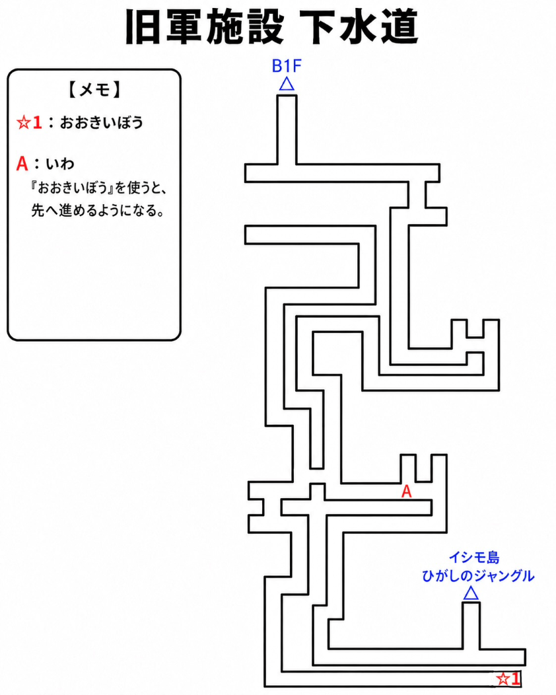

このページでは、イシモ島スタート時の旧軍施設脱出までの流れを解説します。
各階層で拾える重要アイテムや注意点などを、簡略マップ付きでまとめています。
掲載しているマップは、手書きマップをもとに攻略確認用として簡略化したものです。実際のゲーム画面とは形や縮尺が異なる場合があります。
また、マップ内の☆アイテムは入手できる全アイテムではなく、進行上確認しておきたいものや、目印になりやすいものを中心に記載しています。
詳しい条件やアイテム名は、各マップ内の【メモ】もあわせて確認してください。
① 旧軍施設 地下1F

- ベッドを調べる → 「すいとう」入手
- ベッドで寝る（0日目終了）
- パロから「ナイフ」を入手
- パロに「おねがい」して「どくぼうのカギ」入手
牢屋脱出後から満腹度などが減少開始。
「ナイフ」を装備するとBボタンで攻撃可能になります。
野生生物を倒すと「小さい肉」などを落とすため、焼却炉などで焼いて回復量を上げましょう。
アイテムは棚や地面など様々な場所にあります。持ちきれない場合は牢屋内の「コンテナ」に預けておくと便利です。
コンテナは全拠点共通です。
おすすめアイテム
- めざましどけい： 3つ並んでいるゴミ箱の中央で入手。分解すると「でんち」を入手できます。「かいちゅうでんとう」作成に必要です。
地下1Fには、後で使うダクト入口、地下2Fへの階段、下水道入口、スイッチによるショートカットがあります。
最初からすべて進めるわけではないため、後の手順で再訪します。
② 旧軍施設 1F

- 「こわれたはしご」を入手
- 「スコップ」を入手
- 「ねじ」を入手
- 「みずいろのかぎ」を入手
- 「こわれたはしご」と「ねじ」を合成して「はしご」を作成
1F北側には冷蔵庫2台、水飲み場、加熱装置が並ぶ“調理設備エリア”があります。
水分補給や食材の加熱が可能です。
また、その間にある部屋左上には「みずいろのかぎ」が落ちています。
南側の部屋にはお風呂があり、げんきとライフを回復できます。
ライツアウトパズル扉について
同じく施設1Fにライツアウトパズルの鍵がかかった部屋がありますが、通信機能を使わない場合はクリアには不要です。
一応、ゲーム内時間が夜の間に部屋内の「こわれたはしらどけい」を調べることで「じいちゃんのちず」が入手できます。
昼の間は調べても入手できません。
「じいちゃんのちず」は、リモ島で入手できる「ムシクイのちず」「ボロボロのちず」と合わせて合成することで「ざいほうのちず」になります。
ただし、そこから先は通信機能必須になります。
③ 旧軍施設 地下1F（再訪）
1Fで「みずいろのかぎ」と「はしご」を用意したら、地下1Fへ戻ります。
- 「みずいろのかぎ」で地下1Fの鍵付き扉を開く
- 部屋左上のダクト前で「はしご」を使う
- ダクトへ進む
ダクトへ入るには「はしご」が必要です。
1Fで「こわれたはしご」と「ねじ」を入手し、合成しておきましょう。
④ ダクト内

ダクト内では、蜘蛛の巣を「ナイフ」で切って進みます。
Bボタンで攻撃して蜘蛛の巣を切って先へ進みましょう。
- 「かんきせん」を入手
- 「モーター」を入手
- ダクトを抜けて2Fへ進む
「かんきせん」と「モーター」は、後のルートで役立つため拾っておくと安心です。
⑤ 旧軍施設 2F

- ダクトから2Fへ出る
- 「さんそボンベ」を入手
- 3Fへ進む
2Fにはセーブ可能エリアがあります。3F以降へ進む前に、必要ならここでセーブしておきましょう。
おすすめアイテム
- ヘルメット： ベッドが並んだ部屋の棚で入手。「つるべ」作成に必要です。
- さんそボンベ： イシモ島からリモ島に移動するときに必要になります。
湿ったベッドを調べて寝るとライフが−20されるので、施設3Fにある「はな」を使用してから寝るか、メニューから寝るとデメリットを回避できます。
2Fの出口①は、旧軍施設脱出後に外から「なわばしご」をかけると通行可能になります。初回探索時点では通行できません。
⑥ 旧軍施設 3F・4F

- 3Fから4Fへ行き「おくじょうのカギ」を入手
- 3Fのがれきを「スコップ」で除去
- 「しかくクランク」を入手
- 「おくじょうのカギ」で開くドアから地下1Fへ戻る
4Fは小部屋1つだけのため、このページでは個別マップを省略しています。
3Fマップ内では、4F側に「☆1：おくじょうのカギ」として記載しています。
⑦ 旧軍施設 地下1F（ショートカット開通）
3Fから「おくじょうのカギ」で開くドアを通ると、地下1Fへ戻れます。
地下1Fへ戻ったら、階段付近の壁にある丸いボタンを押します。
ボタンを押すと南側のブロックが動き、ショートカットが開通します。
地下1Fマップでは、スイッチ②とブロック2⃣で表記しています。
⑧ 旧軍施設 地下2F

- 地下1Fから地下2Fへ進む
- 壁の使用ポイントで「しかくクランク」を使う
- 地下1F南西の部屋の汚水が抜ける
- 地下1F南西の部屋から下水道へ進めるようになる
地下2Fで「しかくクランク」を使うと、地下1F南西の部屋の汚水が抜け、下水道へ進めるようになります。
⑨ 下水道

- 地下1F南西の部屋から下水道へ進入
- 「おおきいぼう」を入手
- 岩の前で「おおきいぼう」を使う
- 先へ進み、旧軍施設を脱出する
下水道では「おおきいぼう」を入手し、岩をどかして進みます。
その先へ進むと、旧軍施設から脱出できます。
旧軍施設脱出後
旧軍施設を脱出した後は、南西の小屋がイシモ島での拠点になります。
ここにも「コンテナ」があり、旧軍施設内で預けたアイテムと共有されています。
旧軍施設には再度入る方法もあるため、取り逃し等は気にしなくても大丈夫です。